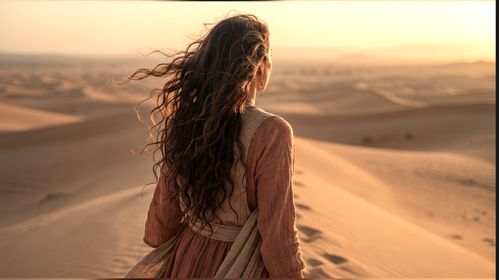

Die geballte Urkraft
Elemental Coaching
Für Unternehmerinnen, die bereit sind,
sich selbst auf einer tiefen Ebene zu begegnen.

The 4 Gateways of Human Consciousness
Jedes Element trägt eine uralte Weisheit in sich. Gemeinsam bilden die 4 Gateways das Fundament von Rise of the Phoenix und den Ausgangspunkt deiner Reise. Sie eröffnen dir neue Perspektiven auf dich selbst, deine Führung und dein Leben.
Jedes Element öffnet ein neues Tor zu deinem Bewusstsein und lädt dich ein, dir selbst auf einer tieferen Ebene zu begegnen. Schritt für Schritt gewinnst du mehr Klarheit über deine innere Ausrichtung – und schaffst die Grundlage, dein Business bewusst aus deiner innersten Wahrheit heraus zu führen.
Fühle
Löse, was dich zurückhält
Tauche ein in deine Emotionen
Finde in deine wahre Essenz
Handle
Entfalte deine innere Kraft
Verwandle Angst in Mut
Entzünde deine Vision
Wird nach Abschluss von Gateway 1 freigeschaltet
Erkenne
Erhebe dich über alte Gedanken
Gewinne Klarheit
Öffne neue Perspektiven
Wird nach Abschluss von Gateway 2 freigeschaltet
Verankere
Baue ein solides Fundament
Heile deine Wurzeln
Baue dein Vermächtnis
Wird nach Abschluss von Gateway 3 freigeschaltet
Deine Reise beginnt mit Gateway 1 –
Im Zeichen des Sturms
Erst nach dem erfolgreichen Abschluss dieses ersten Gateways werden die weiteren Gateways freigeschaltet. So baut jede Bewusstseinsreise auf der vorherigen auf und führt dich Schritt für Schritt tiefer in die Phoenix Philosophy.
